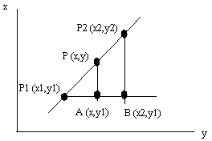

Testing PI:formulas
From odt-file
MathML-formulas for HTML5. No namespace and no special doctype
Reading a complete odt-document
Line
Let us look a straight line in a plane as a simple first example.
The triangles P1,A,P and P1,B,P2 are similar and we can set up the following:
and find for example y expressed by coordinates for the two known points and x.
As an alternative we could set up a parametric equation for the line. Parametric means that the expression contains a parameter, t, that changes when we run along the line. For a line in the plane we get two parametric expressions, one for x and one for y. Since we have a line, both are linear.